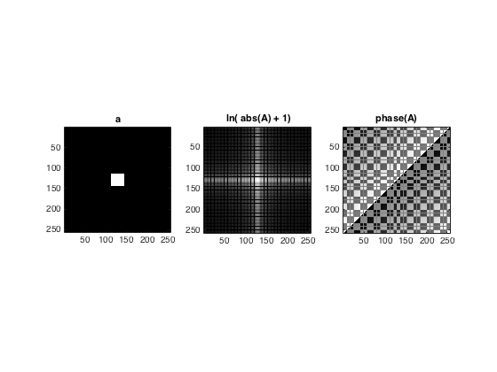

Contents
box
figure
a = zeros(256,256);
a(size(a,1)*3/8+1 : size(a,1)*5/8, size(a,2)*3/8+1 : size(a,2)*5/8) = 1;
subplot(1,3,1)
imagesc(a)
colormap(gray); axis image
title('a')
A= fft2(a);
Aprime = fftshift(A);
Mag = abs(Aprime);
Ph = angle(Aprime);
subplot(1,3,2)
imagesc(log(Mag+1))
colormap(gray); axis image
title(' ln( abs(A) + 1)');
subplot(1,3,3)
imagesc(Ph)
colormap(gray); axis image
title(' phase(A) ');

circle
figure
[rr, cc] = meshgrid(1:256);
b1 = sqrt((rr-128).^2+(cc-128).^2)<=32;
b2 = sqrt((rr-128).^2+(cc-128).^2)<=48;
b = b2-b1;
subplot(1,3,1)
imagesc(b)
colormap(gray); axis image
title('b')
B= fft2(b);
Bprime = fftshift(B);
Mag = abs(Bprime);
Ph = angle(Bprime);
subplot(1,3,2)
imagesc(log(Mag+1))
colormap(gray); axis image
title(' ln( abs(B) + 1)');
subplot(1,3,3)
imagesc(Ph)
colormap(gray); axis image
title(' phase(B) ');
hollow box
figure
c = zeros(256,256);
c(size(a,1)*3/8+1 : size(a,1)*5/8, size(a,2)*3/8+1 : size(a,2)*5/8) = 1;
c(size(a,1)*3.5/8+1 : size(a,1)*4.5/8, size(a,2)*3.5/8+1 : size(a,2)*4.5/8) = 0;
subplot(1,3,1)
imagesc(c)
colormap(gray); axis image
title('c')
C= fft2(c);
Cprime = fftshift(C);
Mag = abs(Cprime);
Ph = angle(Cprime);
subplot(1,3,2)
imagesc(log(Mag+1))
colormap(gray); axis image
title(' ln( abs(C) + 1');
subplot(1,3,3)
imagesc(Ph)
colormap(gray); axis image
title(' phase(C) ');
lines
figure
d = zeros(256, 256);
d(:,82:86) = 1;
d(:,164:168) = 1;
subplot(1,3,1)
imagesc(d)
colormap(gray); axis image
title('d')
D= fft2(d);
Dprime = fftshift(D);
Mag = abs(Dprime);
Ph = angle(Dprime);
subplot(1,3,2)
imagesc(log(Mag+1))
colormap(gray); axis image
title(' ln( abs(D) + 1)');
subplot(1,3,3)
imagesc(Ph)
colormap(gray); axis image
title(' phase(D) ');
dots
figure
e = zeros(256, 256);
e(127:128,84:85) = 1;
e(127:128,168:169) = 1;
subplot(1,3,1)
imagesc(e)
colormap(gray); axis image
title('e')
E= fft2(e);
Eprime = fftshift(E);
Mag = abs(Eprime);
Ph = angle(Eprime);
subplot(1,3,2)
imagesc(log(Mag+1))
colormap(gray); axis image
title(' ln( abs(E) + 1)');
subplot(1,3,3)
imagesc(Ph)
colormap(gray); axis image
title(' phase(E) ');

checkerboard
figure
f1 = cos((1:256)*pi./8);
f2 = cos((1:256)*pi./8);
[f4, f3] = meshgrid(f1, f2);
subplot(1,3,1)
f = f3+f4;
imagesc(f)
colormap(gray); axis image
title('f')
F= fft2(f);
Fprime = fftshift(F);
Mag = abs(Fprime);
Ph = angle(Fprime);
subplot(1,3,2)
imagesc(log(Mag+1))
colormap(gray); axis image
title(' ln( abs(F) + 1)');
subplot(1,3,3)
imagesc(Ph)
colormap(gray); axis image
title(' phase(F) ');